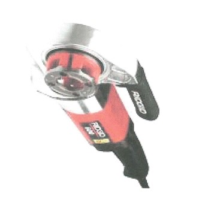

What is fabrication and welding?
Fabrication and welding is the process of cutting, joining and welding two metals together.
Fabrication and welding is a job been done by professionals mainly Fitters those who interpretes the drawing, cuts and join the spools
Then Welder they are those whose duty is to weld or fuse metals together. Also amongts them are Quality Assuarance and Quality Control,their duty just as the name implies are to make sure that the job meets or suppases the standard quality.
Professionals involved in fabrication and welding and their roles
Duties of a Fitter
- Inspecting the workplace, clearing obstructions and preparing materials and equipment.
- Studying blueprints and planning pipe systems and related equipment installations.
- Using a variety of tools to modify pipes to specifications.
- Measuring and marking pipes for cutting and threading.
- Assembling and welding pipe components and systems.
- Securing pipes to walls and fixtures with brackets, clamps, and welding equipment.
- Ordering required materials such as pipes, hangars, brackets, hydraulic cylinders, etc.
- Repairing and maintaining pipe systems, supports, and related equipment.
- Clearing pipe systems of obstructions and testing their functionality.
- Complying with relevant codes and regulatory standards.
Duties of a Welder
- Always follow specifications and instructions for maximum efficiency
- Weld components using manual or semi-automatic welding equipment
- Set up components for welding
- Report damages on machines and equipment
- Test and inspect welded surfaces and structure to discover flaws
- Maintain equipment in a condition that does not compromise safety
Duties of a Quality Assurance and Quality Control
- Identifying problems in products and processes
- Develop Testing Methods.
- Relay Information.
- Solve Problems.
Fitting equipments
 Pipe Cutter
Pipe Cutter Pencil grinder
Pencil grinder- Angl e Degree finder
 Lathe Marchine
Lathe Marchine Pipe Clamp
Pipe Clamp- Pipe Bender
 Electric Beveling Marchine
Electric Beveling Marchine- Diecing Marchine